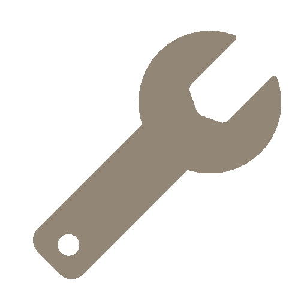

<ion-card class="card grad-background">
  <ion-card-header style="text-align: center">
    <ion-card-subtitle>Avvicinati al Macchinario</ion-card-subtitle>
    <ion-card-title>Macchinario 1</ion-card-title>
  </ion-card-header>

  <ion-card-content>
    <ion-row>
      <ion-col offset="4" size="6">
        <span *ngIf="prefersDark; then thenBlock else elseBlock"></span>
      </ion-col>
    </ion-row>
    <ion-row>
      <ion-col offset="3" size="6">
        <ion-button expand="block" disabled>Avvia</ion-button>
      </ion-col>
    </ion-row>
  </ion-card-content>
</ion-card>

<ng-template #thenBlock>
  
</ng-template>
<ng-template #elseBlock>
  
</ng-template>